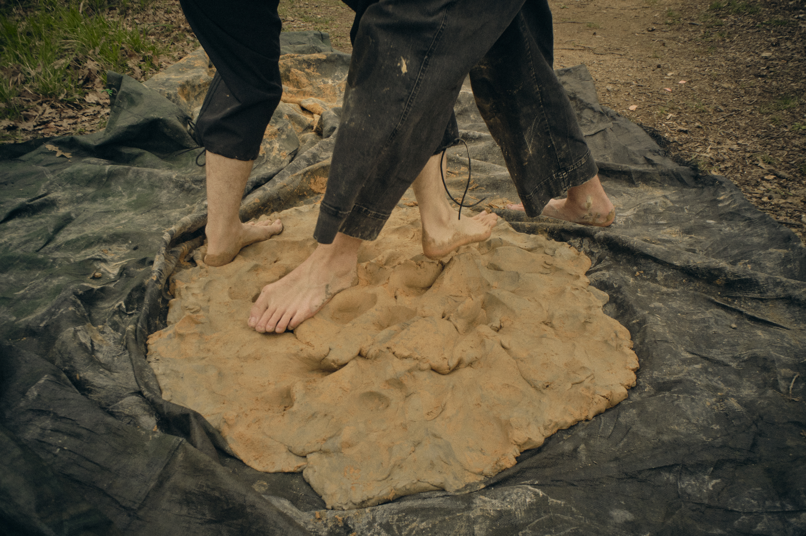
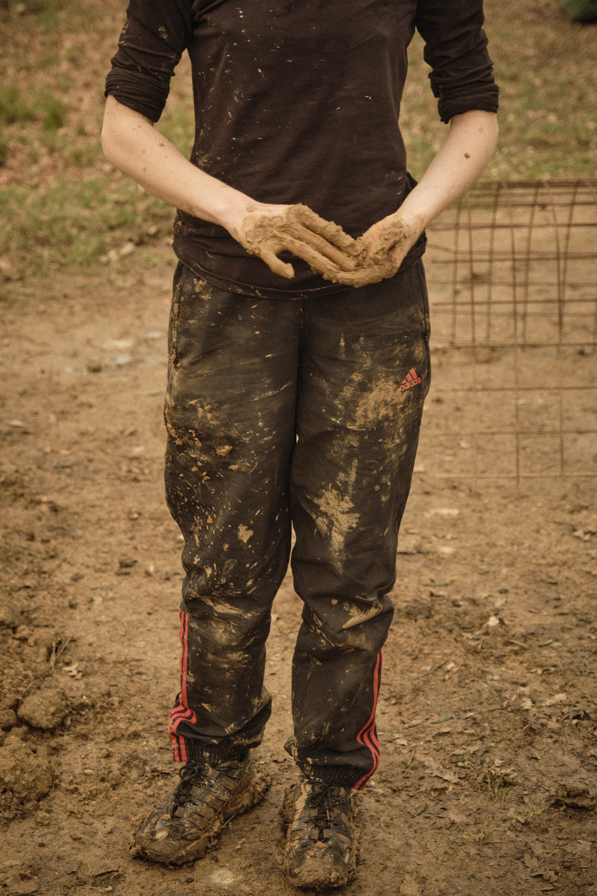
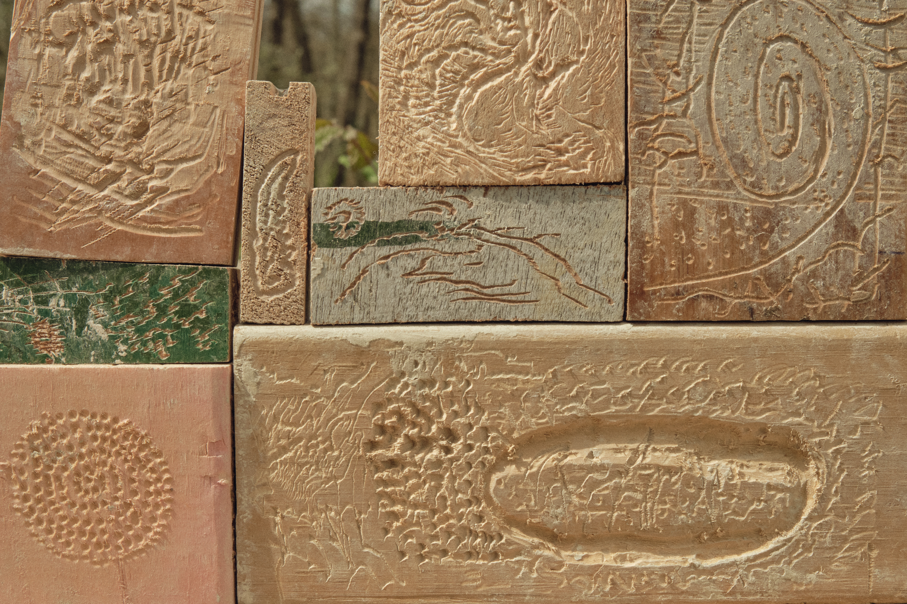
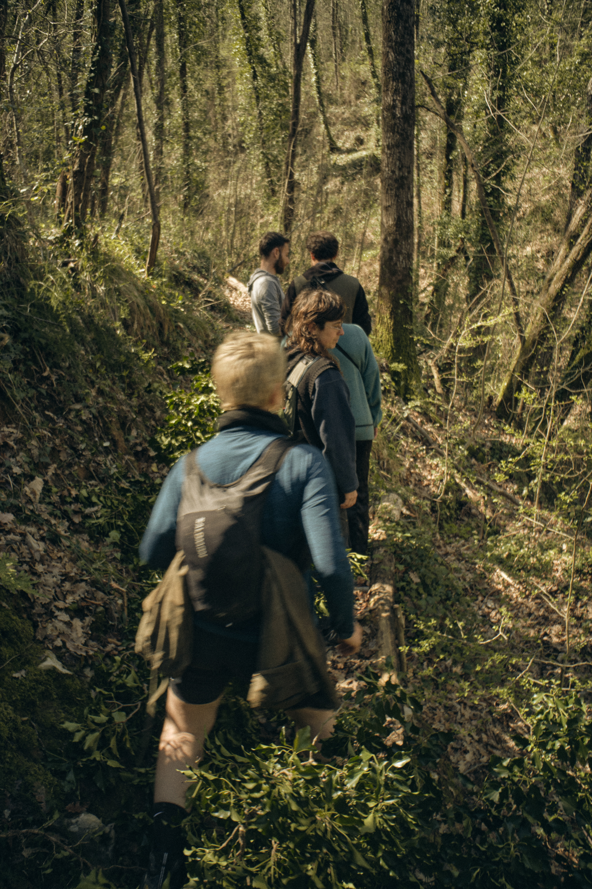
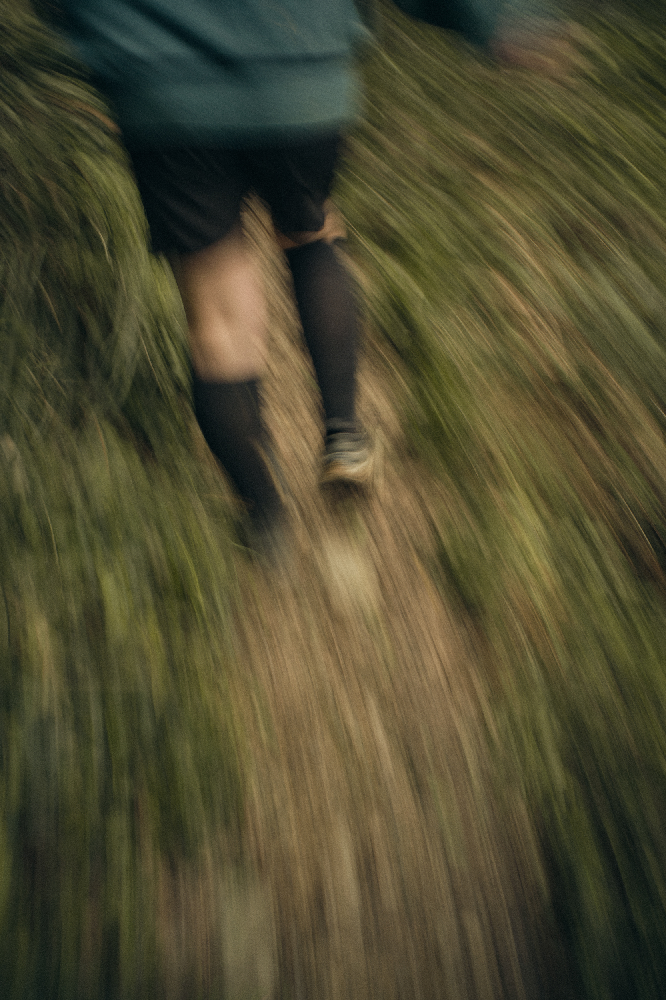

Set in a natural park overlooking the Ligurian sea, the area, shaped by successive civilisations since the bronze age, offers an inspiring ground for research at the intersection of nature and culture, ancient and contemporary knowledge.



Each edition brings together a group of artists from different backgrounds around a common research theme, a starting point that encourages dialogue between different practices and the weaving of a collective narrative.
During these gatherings, APUA aspires to create a temporary, self-organised community where artists can learn from one another, intertwine their practices, and create artworks that resonate with the surrounding territory.